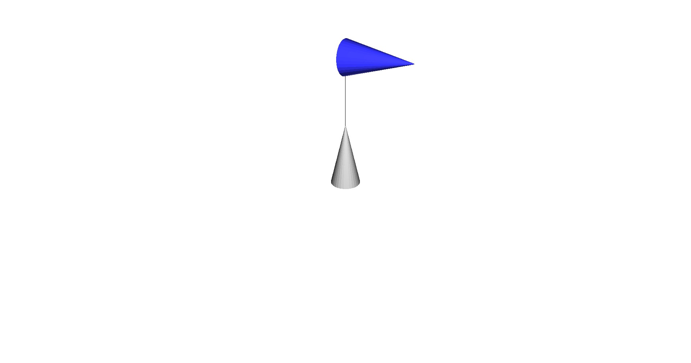

Note
Click here to download the full example code
Animated URDF with Meshes¶
This example shows how to load a URDF with STL meshes and animate it. This example must be run from within the examples folder or the main folder because it uses a hard-coded path to the URDF file and the meshes.
print(__doc__)
import os
import numpy as np
from pytransform3d.urdf import UrdfTransformManager
import pytransform3d.visualizer as pv
def animation_callback(step, n_frames, tm, graph):
angle = 2.79253 * np.sin(2.0 * np.pi * (step / n_frames))
tm.set_joint("joint", angle)
graph.set_data()
return graph
BASE_DIR = "test/test_data/"
data_dir = BASE_DIR
search_path = "."
while (not os.path.exists(data_dir) and
os.path.dirname(search_path) != "pytransform3d"):
search_path = os.path.join(search_path, "..")
data_dir = os.path.join(search_path, BASE_DIR)
tm = UrdfTransformManager()
with open(data_dir + "simple_mechanism.urdf", "r") as f:
tm.load_urdf(f.read(), mesh_path=data_dir)
fig = pv.figure("URDF with meshes")
graph = fig.plot_graph(
tm, "lower_cone", s=0.1, show_connections=True, show_visuals=True)
fig.view_init()
fig.set_zoom(1.2)
n_frames = 100
if "__file__" in globals():
fig.animate(animation_callback, n_frames, loop=True, fargs=(n_frames, tm, graph))
fig.show()
else:
fig.save_image("__open3d_rendered_image.jpg")
Total running time of the script: ( 0 minutes 0.107 seconds)